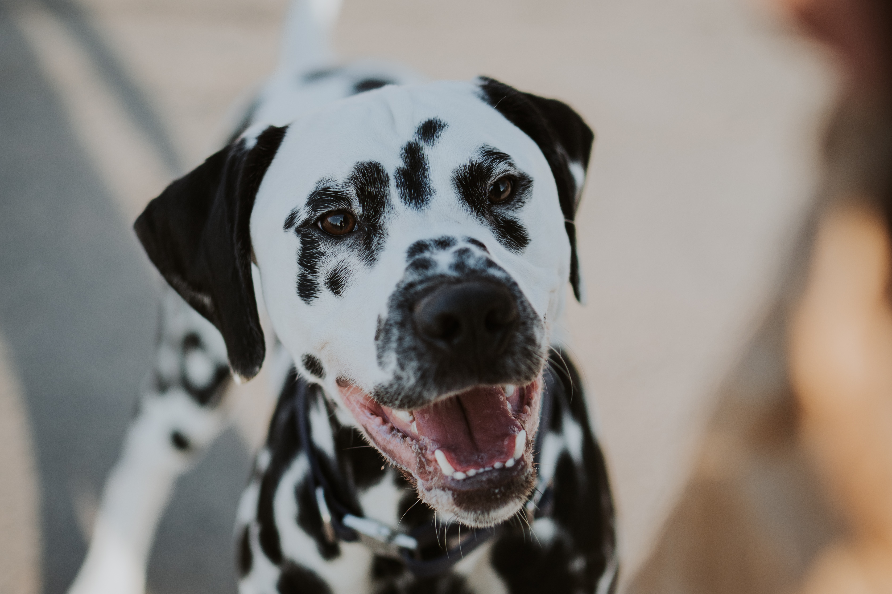

Adzi ist ein wunderschöner und charmanter Dalmatiner-Deckrüde mit ausgezeichneter Abstammung und besten Gesundheitsergebnissen.
Rasse: Dalmatiner
Alter: 2 Jahre
Gesundheitschecks: HD-B, ED-frei
Adzi überzeugt nicht nur durch seine sportliche Statur und sein freundliches Wesen, sondern auch durch seine exzellente Genetik.
Interessiert? Schreibe mir eine E-Mail: tyrakowski.laura@gmail.com